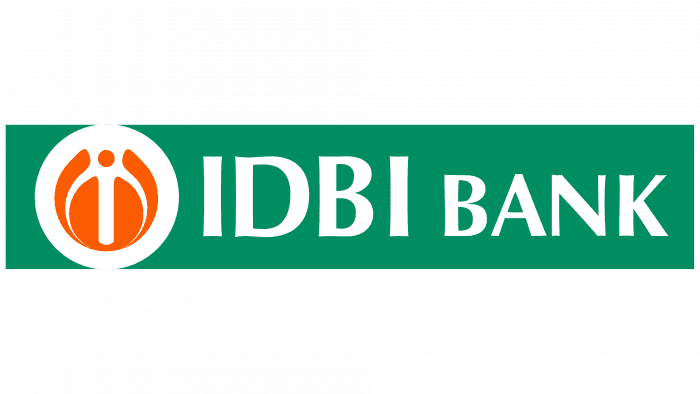

IDBI Bank
./css/The IDBI Bank Limited (IDBI Bank or IDBI) is an Indian private sector bank and a subsidiary of Life Insurance Corporation (LIC) providing financial and banking services. It was established in 1964 as Industrial Development Bank of India, a development finance institution, which provided financial services to industrial sector. In 2005, the institution was merged with its commercial division, IDBI Bank, forming the present-day banking entity and was categorised as "other public sector banks" category. Later in March 2019, RBI recategorised it as a private bank.[4] Many national institutes find their roots in IDBI like SIDBI, India Exim Bank,[5] National Stock Exchange of India and National Securities Depository Limited.
History
Development Banking emerged after the Second World War and the Great Depression in the 1930s. The demand for reconstruction funds for the affected nations compelled in setting up of national institutions for reconstruction. At the time of Independence in 1947, India had a fairly developed banking system. The adoption of bank dominated financial development strategy was aimed at meeting the sectoral credit needs, particularly of agriculture and industry. Towards this end, the Reserve Bank concentrated on regulating and developing mechanisms for institution building. The commercial banking network was expanded to cater to the requirements of general banking and for meeting the short-term working capital requirements of industry and agriculture. Specialized Development Financial Institutions (DFIs) such as the IDBI, NABARD, NHB and SIDBI were set up to meet the long-term financing requirements of industry and agriculture.
IDBI Intech
It provides IT related services in the areas of Consultancy, System Integration, System implementation & support, Applications & Server hosting and other IT related managed services and specialized training.[18][19] IDBI Intech has been accredited with ISO 9001:2000 certification for IT-related services including Data Centre Management and Call Centre, and also Certified IT Security Auditing Organisation with the Indian Computer Emergency Response Team (CERT-In).[20]